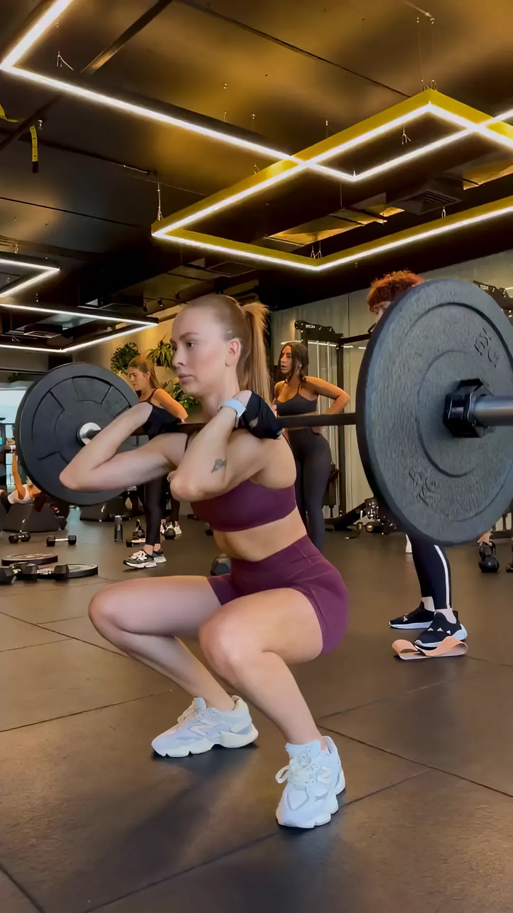
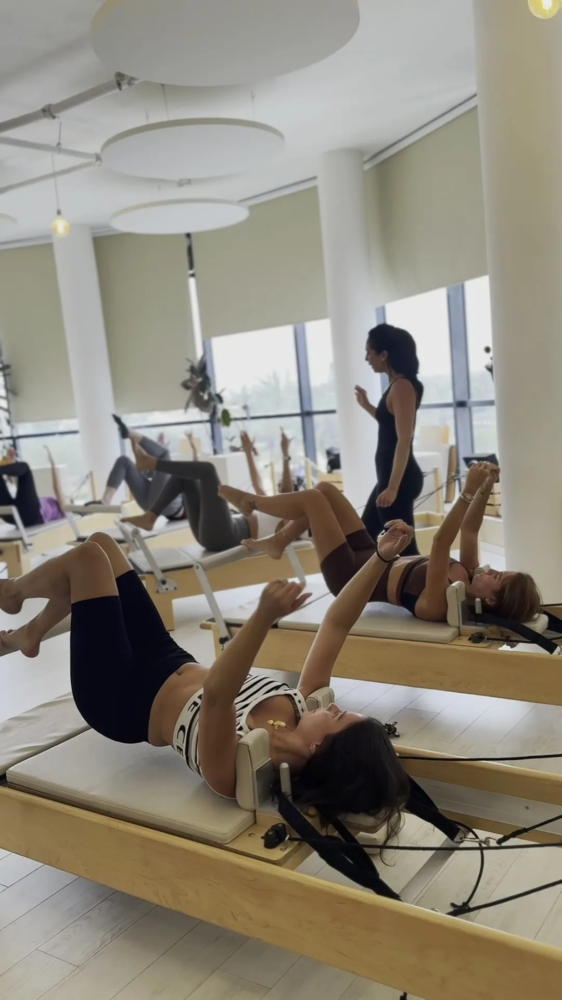
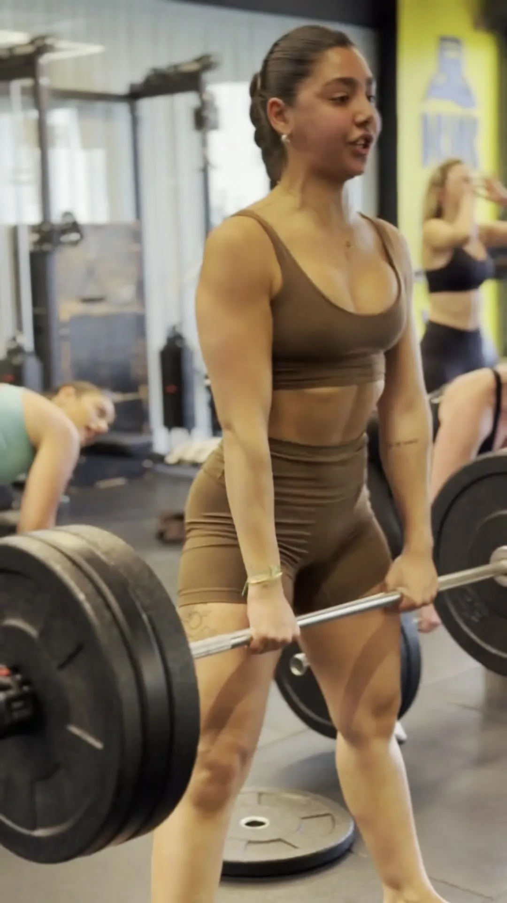

אותו אתר.
יותר אנשים שקובעות.
כל דוגמה מטפלת בנקודה אחרת במסע של מתאמנת חדשה: מה היא רואה בשנייה הראשונה, איך היא מבינה מה מתאים לה, ואיך היא מגיעה לשיעור אמיתי. כל השיעורים בדוגמאות לקוחים מלוח ארבוקס האמיתי.

פתיח חי + כפתור חכם
היום: בטלפון הפתיח מציג כותרת, שני כפתורים ועוד שתי שורות טקסט. שום דבר בו לא "חי", והכפתור הדביק למטה אומר תמיד אותו דבר.
בדוגמה: כפתור ראשי אחד, פס "השיעור הבא בסטודיו" שמתחלף מהלוח האמיתי, ציטוטים מביקורות גוגל, וכפתור דביק שמשנה את ההצעה לפי המקטע שקוראים.
למה זה ימכור: 100% מהגולשות רואות את הפתיח. שיעור אמיתי שמתחיל בקרוב = דחיפות אמיתית, בלי להמציא "נותרו מקומות".

התאמת אימון ב-3 שאלות
היום: "מאיפה בא לך להתחיל?" = 5 כרטיסים סטטיים, כ-1,300 פיקסלים של גלילה בטלפון. מי שלא בטוחה — יוצאת.
בדוגמה: 3 הקשות (מטרה, ניסיון, שעה) ⇐ החלל שמתאים לה + 3 השיעורים הקרובים שמתאימים לשעה שבחרה, עם "קבעי" ישיר לאימון היכרות.
למה זה ימכור: פחות בחירה = פחות נטישה. כל הקשה היא התחייבות קטנה, והתוצאה מרגישה אישית — וממנה שיעור אחד ללחוץ עליו.

שלושת החללים כסטוריז
היום: שלושת החללים מסודרים אחד מתחת לשני — 2,940 פיקסלים בטלפון, המקטע הארוך ביותר בדף.
בדוגמה: נגן בסגנון סטוריז של אינסטגרם — מסך אחד, וידאו מלא, הקשה לחלל הבא. בסוף כל סטורי: השיעור הבא בחלל הזה + "קבעי".
למה זה ימכור: הקהל של סטפס חי באינסטגרם — זו שפה שהוא כבר מכיר. הדף מתקצר בכ-2,000 פיקסלים, והשראה הופכת מיד לפעולה.
הסקילים שעבדו כאן
רובם כבר מותקנים אצלך — מהחזקים בגיטהאב לתחום הזה.
- emil-design-eng — תנועה ומיקרו-אינטראקציות (Emil Kowalski, ~45 אלף כוכבים)
- apple-design-web — דף "חי" בסגנון אפל: סיפור בגלילה, וידאו, הדרגה
- zero-jank-scroll — גלילה חלקה בלי קפיצות בטלפון
- impeccable — ביקורת וליטוש עיצוב (~79 אלף כוכבים)
- page-cro · form-cro · marketing-psychology — המרה ופסיכולוגיה של החלטה
- claude-seo · ai-seo — לשלב הבא: SEO ונראות במנועי AI
אחרי זה: SEO ו-GEO
- מדידת יום-30 של אשכולות התוכן (16/10) — מה נכנס לאינדקס ומה עלה בדירוג.
- סכמת "שיעורים" (Event) מהלוח האמיתי — כדי שגוגל ו-ChatGPT ידעו מתי יש שיעור.
- דפים לשאלות שאנשים שואלים צ'אטבוטים ("איפה יש פילאטיס מכשירים לנשים בנתניה").